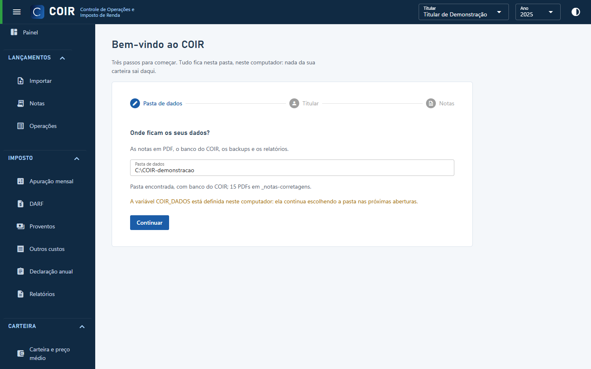
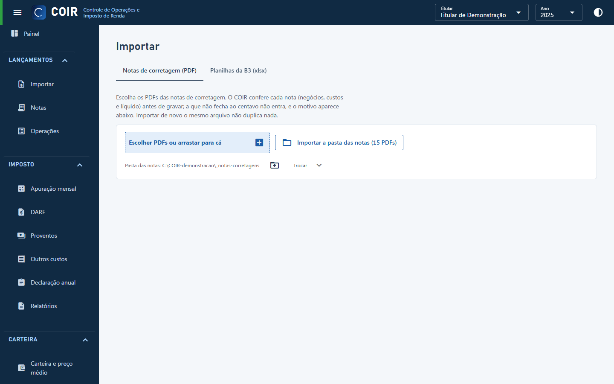
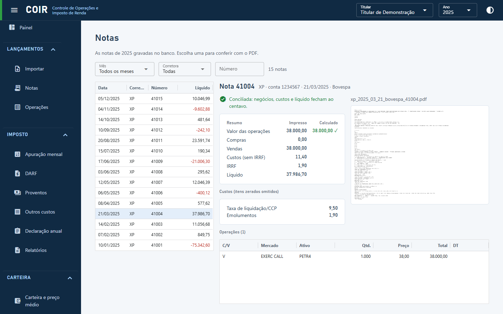
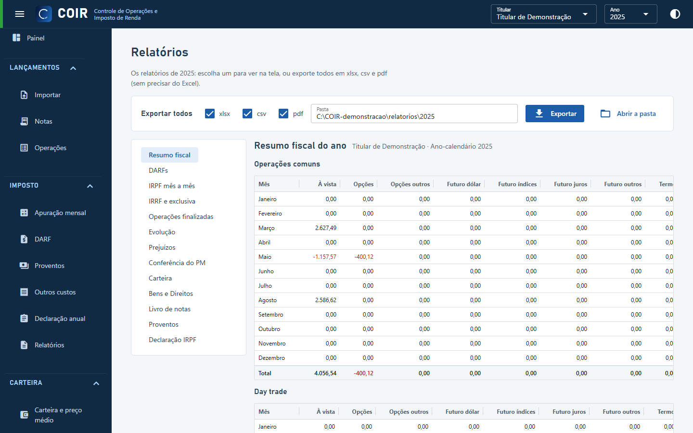

O que é a nota de corretagem no padrão SINACOR
SINACOR é a sigla de Sistema Integrado de Administração de Corretoras. As notas de corretagem emitidas nesse padrão são os documentos, geralmente em PDF, que a corretora disponibiliza com as operações feitas na B3 (Brasil, Bolsa e Balcão), nos segmentos Bovespa e BM&F. Os dados dessas notas são a base para calcular o preço médio, apurar o imposto de cada mês, pagar a DARF e preparar a declaração anual.
Transcrever esses dados à mão, nota por nota, dá trabalho e abre espaço para erro. O COIR lê as notas em PDF, confere cada uma e grava os dados num banco no seu computador. Daí em diante, as operações e os relatórios do ano podem ser exportados para o Excel.
O que você precisa
- Windows 10 ou 11, de 64 bits.
- As notas de corretagem no padrão SINACOR, baixadas do portal da sua corretora (de preferência todo o histórico, desde a primeira compra).
- O
.zipdo COIR. Não é preciso instalar Python, Java nem o Excel: os arquivos exportados abrem no Excel ou em qualquer planilha.
Passo a passo
1. Baixe e abra
Baixe o .zip da última versão, extraia numa pasta sua (por exemplo, Documentos\COIR) e dê dois cliques em COIR.exe. Se o Windows mostrar o aviso do SmartScreen, clique em “Mais informações” e “Executar assim mesmo”: o programa ainda não tem assinatura digital.
2. Escolha a pasta de dados e o titular
Na primeira vez, o assistente de primeiros passos pergunta onde ficam os seus dados (banco, backups, relatórios e, por padrão, as notas em PDF). Use uma pasta fora da pasta do programa, por exemplo Documentos\COIR-dados. Depois, informe o CPF e o nome do titular das notas.

3. Importe as notas
No menu à esquerda, abra Lançamentos › Importar e, na aba Notas de corretagem (PDF), escolha os PDFs (ou arraste) ou importe a pasta das notas inteira. Um PDF pode ter várias notas e várias folhas, e notas de corretoras diferentes do mesmo titular podem ser importadas juntas.
Cada nota é conferida ao centavo (negócios, custos e valor líquido) antes de ser gravada. A que não fecha não entra, e o motivo aparece na lista. Importar o mesmo arquivo de novo não duplica nada.

4. Confira as notas e as operações
Na tela Notas, cada nota aparece com o resumo impresso ao lado do calculado, os custos, as operações lidas e o PDF original. Na tela Operações fica o livro de operações: uma linha por negócio, já com ticker, mercado, categoria (comum, day trade, FII) e os custos rateados, com filtros.

5. Exporte para o Excel
Em Imposto › Relatórios, escolha o relatório e clique em Exportar, ou use Exportar todos. O Livro de notas e as Operações finalizadas trazem os dados das notas; os demais (resumo fiscal, DARFs, IRPF mês a mês, IRRF, prejuízos, carteira, bens e direitos, proventos) trazem o que foi calculado a partir delas. Os arquivos saem em Excel (.xlsx), CSV e PDF na pasta relatorios\<ano> dentro da pasta de dados. A carteira numa data também pode ser exportada pela tela Carteira e preço médio.

Cuidados
Privacidade. As notas de corretagem, o banco e os relatórios contêm dados pessoais, como CPF, operações e contas. O COIR roda só no seu computador e não envia nada a terceiros. Não anexe esses arquivos em pedidos de ajuda nem no GitHub: descreva o caso sem enviar as notas.
- Se as notas começam depois de você já ter ações, informe a custódia e os prejuízos em 31/12 do ano anterior em Sistema › Cadastros › Saldos iniciais.
- Se uma nota não for lida, veja as corretoras e mercados compatíveis e use o pedido de corretora.
- O passo a passo completo de cada tela está no manual.
- O COIR faz as contas e mostra de onde vem cada valor, mas não substitui a orientação de um contador.